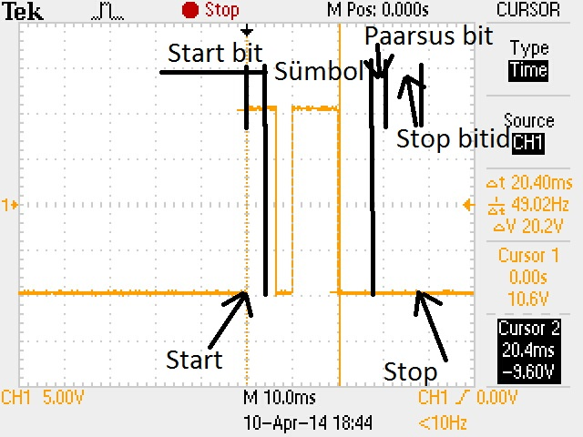
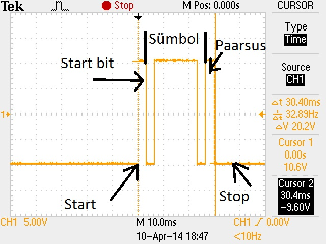
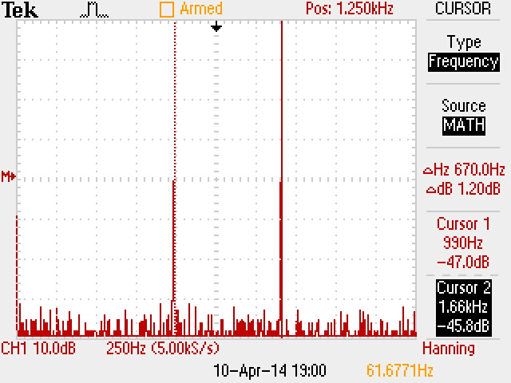
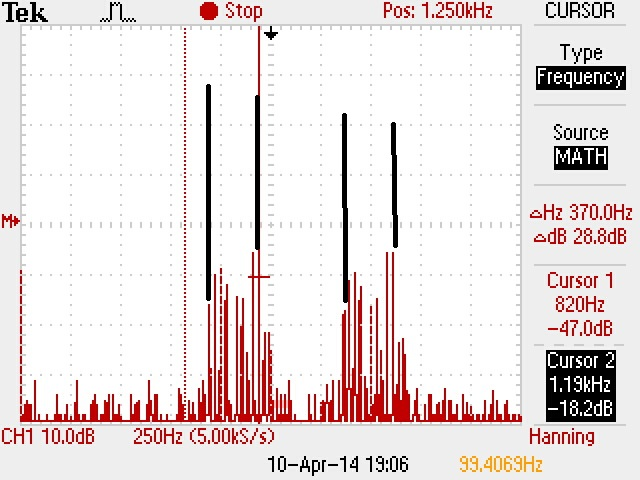
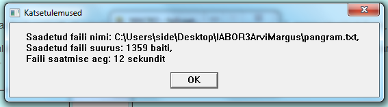
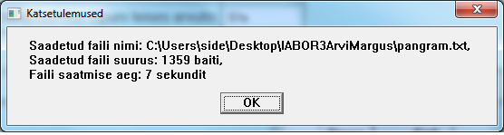

| Töö tegijate nimed: |
| Arvi Kangas |
| Margus Pärt |
| Töö tegemise kuupäev: Thu Apr 10 17:30:49 2014 |
OMA JOONISEL NÄIDATA, kus asuvad bitijadas start-bitt, paarsusbitt, stopp-bitid ja infobitid.
| Liikme nimi | Arvi |
| Valitud sümbol | b |
| Sümboli ASCII kood | 0100011 |
| signaali "1" nivoo | 0 |
| signaali "0" nivoo | 5 |
| sümboli edastamiseks kulunud aeg | 36 ms |
| mitu bitti selle aja jooksul edastati | 11 |
| signaali pilt |  |
OMA JOONISEL NÄIDATA, kus asuvad bitijadas start-bitt, paarsusbitt, stopp-bitid ja infobitid.
| Liikme nimi | Margus |
| Valitud sümbol | a |
| Sümboli ASCII kood | 0100010 |
| signaali "1" nivoo | 0 |
| signaali "0" nivoo | 5 |
| sümboli edastamiseks kulunud aeg | 36 ms |
| mitu bitti selle aja jooksul edastati | 11 |
| signaali pilt |  |
Sümbolite edastuskiirus (bit/s):
Kiirus = Bitte sümboli jaoks / aeg = 11 / 0,036 s = 306 b/s
| Mis muutus, kui paarsuskontrolli viisiks seada Odd | Paarsust me selles laboris ei teinud. Kuid teoreetiliselt peaks igal pildid muutuma paarsusbitt vastupidiseks |
Andmevahetus nullmodemiga me selles laboris ei teinud.
| Seadistuse variant nr | |
| Edastuskiirus | |
| Andmebittide arv | |
| Paarsuskontroll | |
| Stoppbittide arv |
| Paarsuskontroll ja edastatava sümboli valik | Valitud sümbol ja sümboli ASCII kood | Sümboli edastamiseks kulunud aeg |
Sümbolite edastuskiirus (bit/s):
ARVUTADA SÜMBOLITE EDASTUSKIIRUS!
| A modem või B modem | Spektri pilt | ||||
| Andmeedastust ei toimu, 2 kühmu sagedused |
990 | 1660 |  |
||
| Edastatakse mõlemalt poolt sümbolit @, 4 kühmu sagedused |
980 | 1180 | 1650 | 1850 |  |
| Edastuskiirus 300 bit/s (lisa makro tulemused) | 12s |
|  | |
| Mõõdetud aeg faili saatmise algusest kuni faili kohalejõudmise lõpuni teises arvutis | 51s |
| Edastuskiirus 1200 bit/s (lisa makro tulemused) | 7s |
|  | |
| Mõõdetud aeg faili saatmise algusest kuni faili kohalejõudmise lõpuni teises arvutis | 16s |
Aruande vormistamisel leida 1) bitikiirus faili edastamisel makro tulemustest ja 2) leida kiirus järjestikliidese ja modemite kaudu moodustatud faili ülekande kanalis. Aruandes tuua ära lahenduskäik.
Bitikiirus faili edastamisel saatja arvutis = saadetud_bitid / aeg = 1359*8 / 12 = 906 b/s
3) Arvutada antud faili suuruse andmehulga teoreetiline edastamise aeg edastuskiirustel 300 bit/s ja 1200 bit/s, kui andmebittide arv on 7, paarsuskontroll Even, stoppbittide arv on 2. Aruandes tuua ära lahenduskäik.
Saadetud arv bitte = 1359*8 = 10872
Mitu korda oli vaja saata andmebitte = 10872 / 7 = 1553
Lisabitte andmebittide juurde = 4
Lisabitte saatmise ajal kokku = 1553 * 4 = 6212
Bitte kokku = 6212 + 10872 = 17084
Teoreetiline aeg kiirusel 300 b/s= 17084 / 300 = 56 s
Teoreetiline aeg kiirusel 1200 b/s= 17084 / 1200 = 14 s